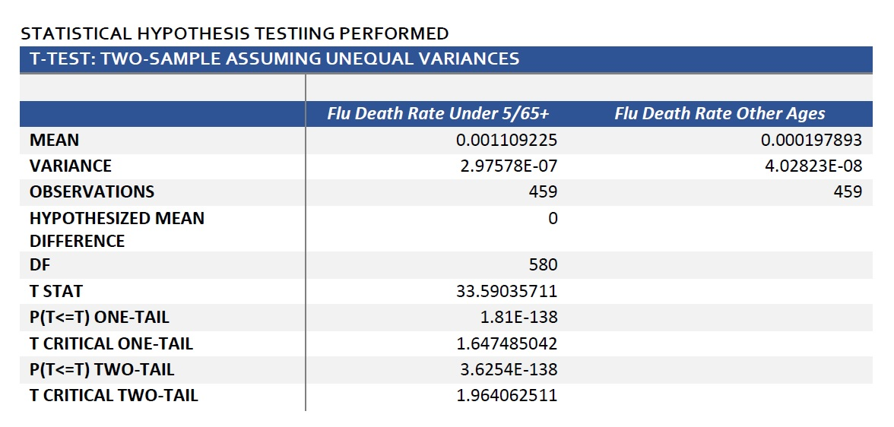

Influenza
Introduction
Problem:
Every year in the US, extra demands are placed on hospitals and clinics during flu season, leading to staffing shortages and undesirable health outcomes because of those staffing shortages.
Context:
I carried out this analysis as a student for a project in CareerFoundry's Data Analytics Program. The purpose of this project was to become familiar with Tableau and Excel skills commonly used by data analysts. The project also enabled me to put all the analytics pieces together:
- Understanding business requirements
- Designing a project
- Data cleaning & transformation
- Data analysis
- Data visualization
- Reporting & presentation
Goal:
My goal was to help mitigate medical staffing shortages in hospitals and clinics across the US during flu season. By using deaths and population data, I determined the regions and seasons of greatest need, so the correct amount of staff could be sent to the right locations at the right times of the year.
Tools:
- Tableau
- Excel
Data:
- CDC Influenza Deaths
- US Census Bureau Population by Geography
To view the data sets, click here.
Process
Process Steps:
| Step | Skills | Purpose |
|---|---|---|
| 1. Understanding business requirements | Learned how to interpret and write a business requirements document. | Found location of important project elements, such as objectives, goals, scope, stakeholders, and more. |
| 2. Designing a data research project | Wrote a project management plan, decided on project deliverables, and formed a project hypothesis. | Communicated timelines, expectations, and communication throughout the project; chose best method of presentation delivery; and formed statement to guide remainder of analyis. |
| 3. Sourcing the right data | Evaluated relevance of data for project, ensured reliability of data source, determined collection and storage methods, and acquired a understading of data contents and limitations. | Ensured project fit and set stage for next steps. |
| 4. Profiling data | Ran basic calculations to determine data consistency and accuracy, such as number of records, unique records, and averages. | Quickly found inaccurate records, values out of range, incorrect formatting, and other data integrity issues. |
| 5. Resolving data quality issues | Addressed missing data, duplicate records, and other quality issues. | Prevented errors or incorrect conclusions in later steps. |
| 6. Tranforming and integrating data | Made necessary formatting changes and merged data sets together. | Enabled easy analysis of all variables in data set. |
| 7. Conducting statistical analysis | Calculated standard deviation, variance, correlation, z-scores, and found outliers. | Determined the general spread and distribution of data, if variables in hypothesis were correlated, and data points out of normal range. |
| 8. Consolidating insights | Wrote interim report with statistical insights and conclusions gained at this stage of the project. | Communicated if hypothesis was accepted or rejected as well as other results of statistical analysis. |
| 8. Creating visualizations | Created a variety of charts and graphs to show results of analysis: temporal charts to show data over time, maps to show regional distribution, scatterplots to show correlation, and so on. | Provided appropriate visual aids to communicate results and recommendations to stakeholders. |
Designing a Research Project:
In this step, I created a project management plan. This plan laid out project timelines, modes of communication with stakeholders, potential hypotheses, and other important project components. Initially, there were several written hypotheses, but only one was chosen after looking at the available data sources and conducting exploratory data analyis. For example, hypotheses regarding vaccine rates were not explored because death statistics predominately affected the elderly and vaccine data only contained information on children.
Hypothesis:
Hypothesis: If an individual is older than 65 years of age or less than 5 years of age, then that individual has a greater chance of hospitalization or death as a result of infection with the flu.
To view the project management plan, click here.
Data Integrity & Quality:
When addressing data integrity issues, one of the most important things I did was use Excel formulas to look for extreme values, check value counts, and ensure the number of unique values had expected counts. One of the data integrity issues seen below is the presence of too many state names in the original CDC Influenza Deaths data set. That is because both state names and abbreviations were used. This was later changed, so the data set only included full state names. During the data quality checks, I primarily focused on checking for missing values and duplicate records. Here, I found that there were many suppressed records in the original CDC Influenza data set in all age groups except the top 2-3 oldest age categories. This is because the government suppresses data when there are fewer than 10 records because of privacy issues. I imputed the median of 10, which is 5, for these records. In reality, the death rate for these records is likely lower, just to keep in mind when viewing the recommendations and visualizations later in this case study.
Statistical Analysis:
I calculated some basic descriptive statistics in Excel, such as mean and standard deviation. I also made frequency distribution charts for the percentage of the population over 65 years of age and the distribution of death percentage of that same age group. Finally, I conducted a two-sample t-test in Excel to determine if my hypothesis was correct, that there were more deaths in the under 5/65+ age groups than there were in the rest of the population. After running the t-test, the conclusion was that there was a significant difference between the death rate of the vulnerable age groups and all other age groups.
Null & Alternative Hypotheses:
I divided the main hypothesis at the beginning of this process section into two statements to help determine the direction of my two-sample t-test results.
- Null Hypothesis: The flu-related death rate in US populations of people under 5/65+ is equal to or less than the death rate in all other age groups.
- Alternative Hypothesis: There is a higher flu-related death rate in the US in the under 5/65+ age groups than for other age groups in the US population.
Two-Sample T-Test:
From this analysis, I rejected the null hypothesis that the death rate for the vulnerable age groups is equal or less than the death rate of the other age groups. This means that the death rate for the vulnerable population is greater than the death rate for other age groups, with with a p-value of 1.81 E-138, which is scientific notation. This p-value is much smaller than the my chosen alpha of 0.05, so I rejected the null. The fact that there was a significant difference in deaths rates of the population groups gave context to the Tableau analysis and visualizations discussed in the following recommendations section.

Recommendations
US Flu Season:
Flu is seaonal across the US with minor variations among regions. Flu deaths begin to increase in October, with peaks in January and often March, then decline after that. Because of this, October through March, additional staff should be sent to hospitals and clinics.

Regions of Greatest Need:
States with high populations and especially those with high populations of individuals over 65 years of age, experience the greatest impact and number of deaths from the flu. For this reason, these states should have higher priority when allocating additional staff during the US flu season.

Monitoring Success:
To monitor success of this intervention, staff-to-patient ratios and death counts should be monitored at either selected hospitals in each state, or at an appropriate number of hospitals and clinics in states of highest priority.
Retrospective:
I was given the data for this project, so I had to form a hypothesis and conduct an analysis that could be explored with the given data. If I were to continue this project, I would start a new phase where I would explore different factors that may affect staffing shortages during flu season, such as flu vaccination rates, clinic visits and hospitals stays not leading to death, regions with higher populations of individuals with underlying health conditions, and other possible factors. Of course, these contributing factors would necessitate different interventions, such as ensuring greater vaccination rates and sending extra staff to clinics and not just hospitals.
For More:
To view the project files or Tableau presentation, click the links below.